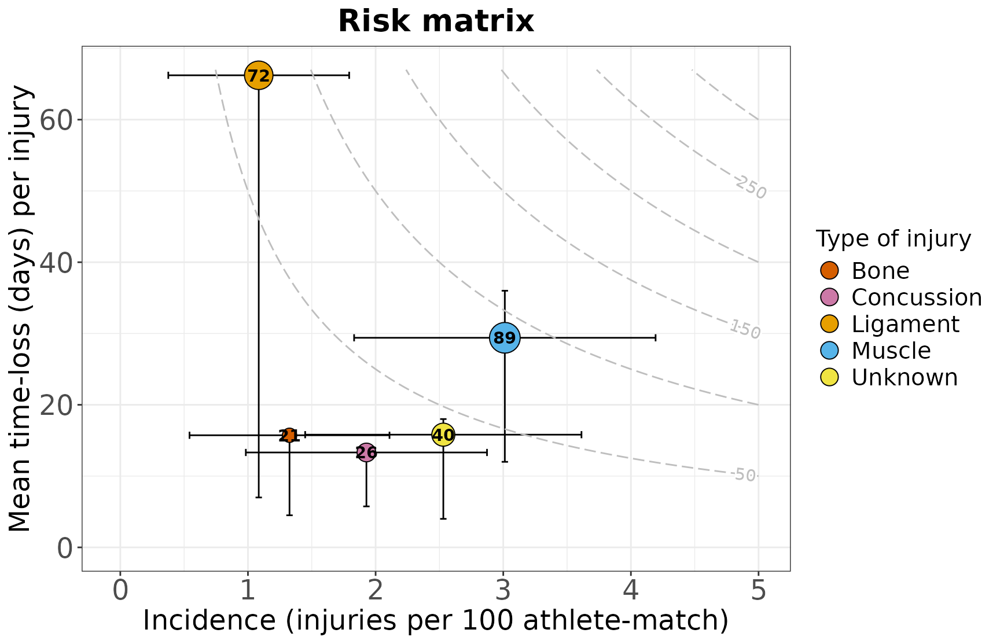
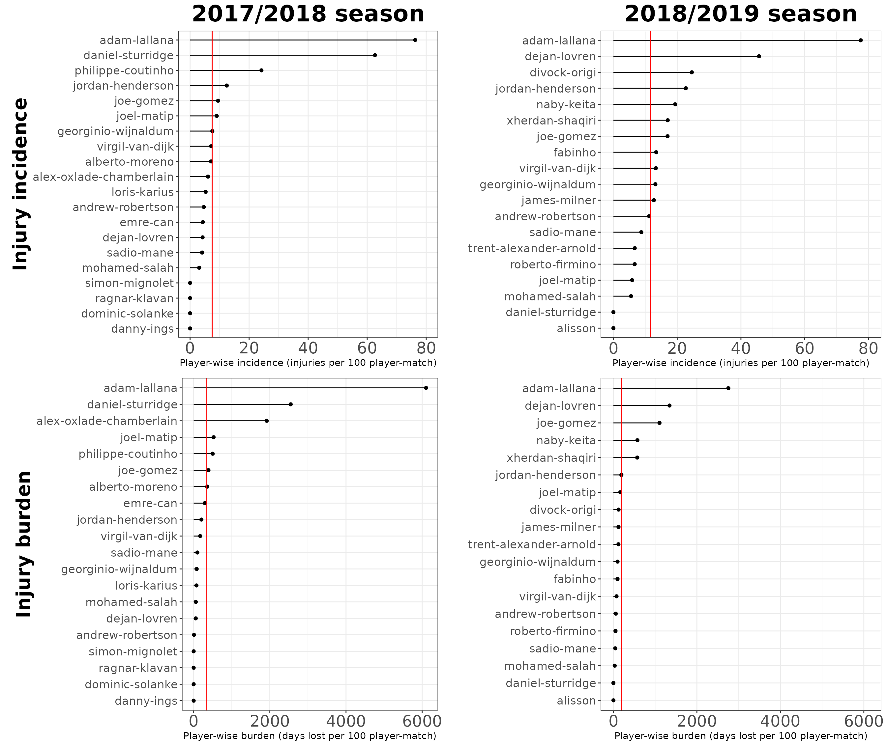
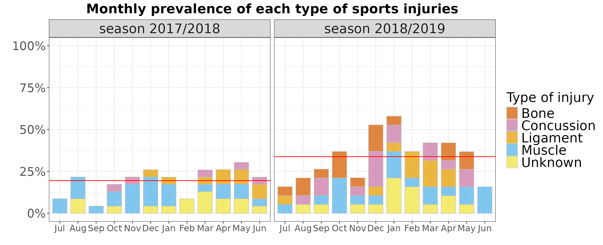

Visualize Sports Injury Data
2025-11-27
Source:vignettes/visualize-injury-data.Rmd
visualize-injury-data.Rmd
library(injurytools)
library(ggplot2)
library(dplyr)
library(gridExtra)
library(grid)
library(knitr)Example data: we continue exploring the cohort of Liverpool Football Club male’s first team players over two consecutive seasons, 2017-2018 and 2018-2019, scrapped from https://www.transfermarkt.com/ website1.
A quick glance
gg_photo(injd,
title = "Overview of injuries:\nLiverpool FC 1st male team during 2017-2018 and 2018-2019 seasons",
by_date = "2 month",
fix = TRUE) +
## plus some lines of ggplot2 code..
xlab("Follow-up date") + ylab("Players") + labs(caption = "source: transfermarkt.com") +
theme(plot.title = element_text(face = "bold", hjust = 0.5, size = 22),
axis.text.x.bottom = element_text(size = 13, angle = 20, hjust = 1),
axis.text.y.left = element_text(size = 12),
axis.title.x = element_text(size = 20, face = "bold", vjust = -1),
axis.title.y = element_text(size = 20, face = "bold", vjust = 1.8),
legend.text = element_text(size = 20),
plot.caption = element_text(face = "italic", size = 12, colour = "gray10"))
Let’s count how many injuries (red crosses in the graph) occurred and how severe they were (length of the thick black line).
# warnings set to FALSE
df_summary <- calc_summary(injd)
df_summary_perinj <- calc_summary(injd, by = "injury_type")
# injdsCode for tidying up the tables
df_summary |>
mutate(incidence_new = paste0(round(incidence, 2), " (", round(incidence_lower, 2), ",", round(incidence_upper, 2), ")"),
burden_new = paste0(round(burden, 2), " (", round(burden_lower, 2), ",", round(burden_upper, 2), ")")) |>
dplyr::select(2, 7, 1, incidence_new, burden_new) |>
kable(col.names = c("N injuries", "N days lost", "Total expo", "Incidence (95% CI)", "Burden (95% CI)"),
caption = "Injury incidence and injury burden are reported as 100 player-matches",
align = "c")
df_summary_perinj |>
mutate(incidence_new = paste0(round(incidence, 2), " (", round(incidence_lower, 2), ",", round(incidence_upper, 2), ")"),
burden_new = paste0(round(burden, 2), " (", round(burden_lower, 2), ",", round(burden_upper, 2), ")")) |>
dplyr::select(1:2, 9, 4, incidence_new, burden_new) |>
kable(col.names = c("Type of injury", "N injuries", "N days lost", "Total expo", "Incidence (95% CI)", "Burden (95% CI)"),
caption = "Injury incidence and injury burden are reported as 100 player-matches",
align = "c")Overall
| N injuries | N days lost | Total expo | Incidence (95% CI) | Burden (95% CI) |
|---|---|---|---|---|
| 82 | 2049 | 74690 | 9.88 (7.74,12.02) | 246.9 (236.21,257.59) |
Overall per type of injury
| Type of injury | N injuries | N days lost | Total expo | Incidence (95% CI) | Burden (95% CI) |
|---|---|---|---|---|---|
| Bone | 11 | 173 | 74690 | 1.33 (0.54,2.11) | 20.85 (17.74,23.95) |
| Concussion | 16 | 213 | 74690 | 1.93 (0.98,2.87) | 25.67 (22.22,29.11) |
| Ligament | 9 | 596 | 74690 | 1.08 (0.38,1.79) | 71.82 (66.05,77.58) |
| Muscle | 25 | 735 | 74690 | 3.01 (1.83,4.19) | 88.57 (82.16,94.97) |
| Unknown | 21 | 332 | 74690 | 2.53 (1.45,3.61) | 40.01 (35.7,44.31) |
Let’s plot the information shown in the second table in a risk matrix that displays injury incidence against injury burden.
# warnings set to FALSE
gg_riskmatrix(injd,
by = "injury_type",
title = "Risk matrix")Code for further plot specifications
# warnings set to FALSE
palette <- c("#000000", Ligament = "#E69F00", Muscle = "#56B4E9", "#009E73",
Unknown = "#F0E442", "#0072B2", Bone = "#D55E00", Concussion = "#CC79A7")
# source of the palette: http://www.cookbook-r.com/Graphs/Colors_(ggplot2)/
theme3 <- theme(plot.title = element_text(face = "bold", hjust = 0.5, size = 20),
axis.text.x.bottom = element_text(size = 20),
axis.text.y.left = element_text(size = 20),
axis.title.x = element_text(size = 15),
axis.title.y = element_text(size = 15),
legend.title = element_text(size = 15),
legend.text = element_text(size = 15))
gg_riskmatrix(injd,
by = "injury_type",
title = "Risk matrix") +
scale_fill_manual(name = "Type of injury",
values = palette) +
guides(fill = guide_legend(override.aes = list(size = 5))) +
theme3#> `height` was translated to `width`.
Comparing injuries occurred in 17/18 vs. 18/19
We prepare two injd objects:
## Plot just for checking whether cut_injd() worked well
p1 <- gg_photo(injd1, fix = TRUE, by_date = "3 months")
p2 <- gg_photo(injd2, fix = TRUE, by_date = "3 months")
grid.arrange(p1, p2, ncol = 2)Let’s compute injury summary statistics for each season.
# warnings set to FALSE
df_summary1 <- calc_summary(injd1, quiet = T)
df_summary2 <- calc_summary(injd2, quiet = T)Code for tidying up the tables
## **Season 2017/2018**
df_summary1 |>
mutate(incidence_new = paste0(round(incidence, 2), " (", round(incidence_lower, 2), ",", round(incidence_upper, 2), ")"),
burden_new = paste0(round(burden, 2), " (", round(burden_lower, 2), ",", round(burden_upper, 2), ")")) |>
dplyr::select(2, 7, 1, incidence_new, burden_new) |>
kable(col.names = c("N injuries", "N days lost", "Total expo", "Incidence (95% CI)", "Burden (95% CI)"),
caption = "Injury incidence and injury burden are reported as 100 player-matches",
align = "c")
## **Season 2018/2019**
df_summary2 |>
mutate(incidence_new = paste0(round(incidence, 2), " (", round(incidence_lower, 2), ",", round(incidence_upper, 2), ")"),
burden_new = paste0(round(burden, 2), " (", round(burden_lower, 2), ",", round(burden_upper, 2), ")")) |>
dplyr::select(2, 7, 1, incidence_new, burden_new) |>
kable(col.names = c("N injuries", "N days lost", "Total expo", "Incidence (95% CI)", "Burden (95% CI)"),
caption = "Injury incidence and injury burden are reported as 100 player-matches",
align = "c")Season 2017/2018
| N injuries | N days lost | Total expo | Incidence (95% CI) | Burden (95% CI) |
|---|---|---|---|---|
| 26 | 1141 | 31247 | 7.49 (4.61,10.37) | 328.64 (309.57,347.71) |
Season 2018/2019
| N injuries | N days lost | Total expo | Incidence (95% CI) | Burden (95% CI) |
|---|---|---|---|---|
| 56 | 908 | 43443 | 11.6 (8.56,14.64) | 188.11 (175.87,200.34) |
- Who were the most injured players? And the most severely affected?
Player-wise statistics can be computed by
df_summay1_pl <- calc_summary(injd1, overall = FALSE).
Then, we plot them:
p11 <- gg_rank(injd1, line_overall = TRUE)
p12 <- gg_rank(injd1, summary_stat = "burden", line_overall = TRUE)
p21 <- gg_rank(injd2, line_overall = TRUE)
p22 <- gg_rank(injd2, summary_stat = "burden", line_overall = TRUE)
# grid.arrange(p11, p21, p12, p22, nrow = 2)Code for further plot specifications
theme2 <- theme(plot.title = element_text(face = "bold", hjust = 0.5, size = 26),
axis.text.x.bottom = element_text(size = 18),
axis.text.y.left = element_text(size = 13),
axis.title.x = element_text(size = 11, vjust = 1),
axis.title.y = element_text(size = 22, face = "bold", vjust = 1))
p11 <- p11 +
xlab("Injury incidence") +
ylab("Player-wise incidence (injuries per 100 player-match)") +
ggtitle("2017/2018 season") +
scale_y_continuous(limits = c(0, 80)) + ## same x axis
theme2 +
theme(plot.margin = margin(0.2, 0.2, 0.2, 0.5, "cm"))
p12 <- p12 +
xlab("Injury burden") +
ylab("Player-wise burden (days lost per 100 player-match)") +
scale_y_continuous(limits = c(0, 6110)) +
theme2 +
theme(plot.margin = margin(0.2, 0.2, 0.2, 0.65, "cm"))
p21 <- p21 +
ylab("Player-wise incidence (injuries per 100 player-match)") +
ggtitle("2018/2019 season") +
scale_y_continuous(limits = c(0, 80)) +
theme2
p22 <- p22 +
ylab("Player-wise burden (days lost per 100 player-match)") +
scale_y_continuous(limits = c(0, 6110)) +
theme2
grid.arrange(p11, p21, p12, p22, nrow = 2)
- Which injuries were more frequent? And more burdensome?
# warnings set to FALSE
p1 <- gg_riskmatrix(injd1, by = "injury_type",
title = "Season 2017/2018", add_contour = FALSE)
p2 <- gg_riskmatrix(injd2, by = "injury_type",
title = "Season 2018/2019", add_contour = FALSE)
# Print both plots side by side
# grid.arrange(p1, p2, nrow = 1)Code for further plot specifications
palette <- c("#000000", Ligament = "#E69F00", Muscle = "#56B4E9", "#009E73",
Unknown = "#F0E442", "#0072B2", Bone = "#D55E00", Concussion = "#CC79A7")
# source of the palette: http://www.cookbook-r.com/Graphs/Colors_(ggplot2)/
theme3 <- theme(plot.title = element_text(face = "bold", hjust = 0.5, size = 20),
axis.text.x.bottom = element_text(size = 18),
axis.text.y.left = element_text(size = 18),
axis.title.x = element_text(size = 18),
axis.title.y = element_text(size = 18),
legend.title = element_text(size = 15),
legend.text = element_text(size = 15))
## Plot
p1 <- gg_riskmatrix(injd1, by = "injury_type",
title = "Season 2017/2018", add_contour = T,
cont_max_x = 5.2, cont_max_y = 125, ## after checking the data
bins = 10)
p2 <- gg_riskmatrix(injd2, by = "injury_type",
title = "Season 2018/2019", add_contour = T,
cont_max_x = 5.2, cont_max_y = 125,
bins = 10)
p1 <- p1 +
scale_x_continuous(limits = c(-0.05, 5.2)) +
scale_y_continuous(limits = c(-0.05, 125)) +
scale_fill_manual(name = "Type of injury",
values = palette) +
guides(fill = guide_legend(override.aes = list(size = 5))) +
theme3
p2 <- p2 +
scale_x_continuous(limits = c(-0.5, 5.2)) +
scale_y_continuous(limits = c(-0.5, 125)) +
scale_fill_manual(name = "Type of injury",
values = palette) + # keep the same color coding
guides(fill = guide_legend(override.aes = list(size = 5))) +
theme3
grid.arrange(p1, p2, ncol = 2,
top = textGrob("Risk matrices", gp = gpar(fontsize = 26, font = 2))) ## for the main title
- How many players were injured in each month?
We will create bar plots, with each bar representing the monthly prevalence2.
gg_prevalence(injd, time_period = "monthly",
line_mean = TRUE)Code for further plot specifications
theme4 <- theme(plot.title = element_text(face = "bold", hjust = 0.5, size = 20),
axis.text.x = element_text(size = 13.5),
axis.text.y = element_text(size = 18),
legend.title = element_text(size = 20),
legend.text = element_text(size = 20),
strip.text = element_text(size = 20))
gg_prevalence(injd, time_period = "monthly",
line_mean = TRUE,
title = "Monthly prevalence of sports injuries") +
theme4
gg_prevalence(injd, time_period = "monthly",
by = "injury_type", line_mean = TRUE)Code for further plot specifications
palette2 <- c("seagreen3", "#000000", Ligament = "#E69F00", Muscle = "#56B4E9", "#009E73",
Unknown = "#F0E442", "#0072B2", Bone = "#D55E00", Concussion = "#CC79A7")
# source of the palette: http://www.cookbook-r.com/Graphs/Colors_(ggplot2)/
gg_prevalence(injd, time_period = "monthly",
by = "injury_type", line_mean = TRUE,
title = "Monthly prevalence of each type of sports injuries") +
scale_fill_manual(name = "Type of injury",
values = palette2) +
theme4